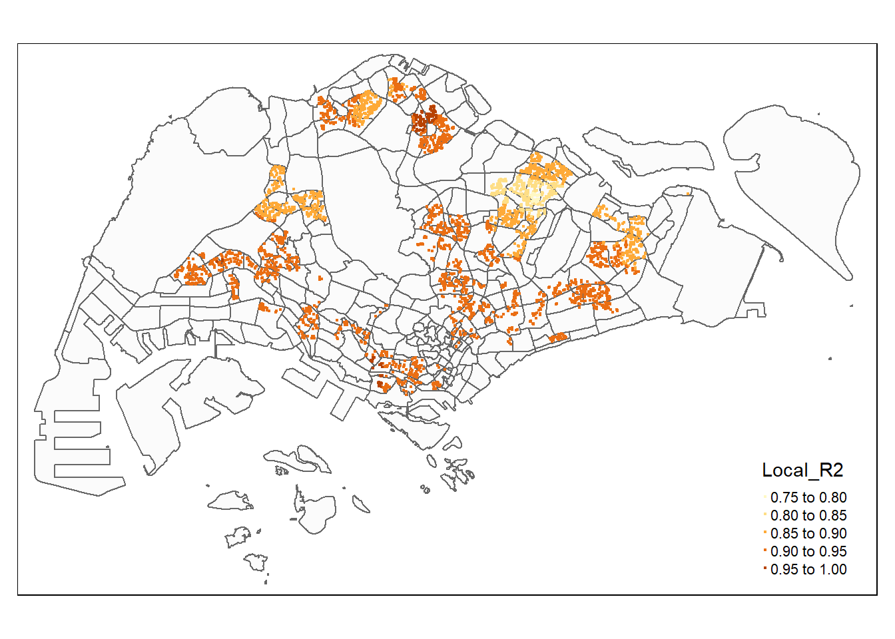

pacman::p_load(sf, spdep, GWmodel, SpatialML,
tmap, rsample, Metrics, tidyverse, ClustGeo,
ggpubr, cluster, factoextra, NbClust, heatmaply, corrplot, psych, GGally, spdep, tmap, sfdep, plotly, Kendall, SpatialAcc, ggstatsplot, reshape2,httr, jsonlite, rvest, olsrr, gtsummary, performance, see)Take Home Exercise 3b: Predicting HDB Resale Prices with Geographically Weighted Machine Learning Methods
Setting the Scene
Housing is an essential component of household wealth worldwide. Buying a housing has always been a major investment for most people. The price of housing is affected by many factors. Some of them are global in nature such as the general economy of a country or inflation rate. Others can be more specific to the properties themselves. These factors can be further divided to structural and locational factors. Structural factors are variables related to the property themselves such as the size, fitting, and tenure of the property. Locational factors are variables related to the neighbourhood of the properties such as proximity to childcare centre, public transport service and shopping centre.
Conventional, housing resale prices predictive models were built by using Ordinary Least Square (OLS) method. However, this method failed to take into consideration that spatial autocorrelation and spatial heterogeneity exist in geographic data sets such as housing transactions. With the existence of spatial autocorrelation, the OLS estimation of predictive housing resale pricing models could lead to biased, inconsistent, or inefficient results (Anselin 1998). In view of this limitation, Geographical Weighted Models were introduced to better calibrate predictive models for housing resale prices.
The Task
In this take-home exercise, you are required to calibrate a predictive model to predict HDB resale prices between July-September 2024 by using HDB resale transaction records in 2023.
The Data
For the purpose of this take-home exercise, HDB Resale Flat Prices provided by Data.gov.sg should be used as the core data set. The study should focus on either three-room, four-room or five-room flat.
Below is a list of recommended predictors to consider. However, students are free to include other appropriate independent variables.
Structural factors
Area of the unit
Floor level
Remaining lease
Age of the unit
Main Upgrading Program (MUP) completed (optional)
Locational factors
Proxomity to CBD
Proximity to eldercare
Proximity to foodcourt/hawker centres
Proximity to MRT
Proximity to park
Proximity to good primary school
Proximity to shopping mall
Proximity to supermarket
Numbers of kindergartens within 350m
Numbers of childcare centres within 350m
Numbers of bus stop within 350m
Numbers of primary school within 1km
Data Wrangling
First we want to load the following packages to achieve our task:
- sf
- spdep
- GWmodel
- SpatialML
- tmap
- rsample
- Metrics
- tidyverse
setting seed
set.seed(1234)mpsz = st_read(dsn = "data/geospatial", layer = "MP14_SUBZONE_WEB_PL")%>%
st_transform(crs = 3414)Reading layer `MP14_SUBZONE_WEB_PL' from data source
`C:\BlumeTechnologies\ISSS626\ISSS626\Take-Home_Exercises\Take-Home_Exercise03\data\geospatial'
using driver `ESRI Shapefile'
Simple feature collection with 323 features and 15 fields
Geometry type: MULTIPOLYGON
Dimension: XY
Bounding box: xmin: 2667.538 ymin: 15748.72 xmax: 56396.44 ymax: 50256.33
Projected CRS: SVY21resale <- read_csv("data/aspatial/ResaleflatpricesbasedonregistrationdatefromJan-2017onwards.csv") %>%
filter(month >= "2023-01" & month <= "2024-09")resale_tidy <- resale %>%
mutate(address = paste(block,street_name)) %>%
mutate(remaining_lease_yr = as.integer(
str_sub(remaining_lease, 0, 2)))%>%
mutate(remaining_lease_mth = as.integer(
str_sub(remaining_lease, 9, 11)))write_rds(resale_tidy, "data/rds/resale_tidy.rds")resale_selected <- resale_tidy #%>%
#filter(month == "2024-09")add_list <- sort(unique(resale_selected$address))get_coords <- function(add_list){
# Create a data frame to store all retrieved coordinates
postal_coords <- data.frame()
for (i in add_list){
#print(i)
r <- GET('https://www.onemap.gov.sg/api/common/elastic/search?',
query=list(searchVal=i,
returnGeom='Y',
getAddrDetails='Y'))
data <- fromJSON(rawToChar(r$content))
found <- data$found
res <- data$results
# Create a new data frame for each address
new_row <- data.frame()
# If single result, append
if (found == 1){
postal <- res$POSTAL
lat <- res$LATITUDE
lng <- res$LONGITUDE
new_row <- data.frame(address= i,
postal = postal,
latitude = lat,
longitude = lng)
}
# If multiple results, drop NIL and append top 1
else if (found > 1){
# Remove those with NIL as postal
res_sub <- res[res$POSTAL != "NIL", ]
# Set as NA first if no Postal
if (nrow(res_sub) == 0) {
new_row <- data.frame(address= i,
postal = NA,
latitude = NA,
longitude = NA)
}
else{
top1 <- head(res_sub, n = 1)
postal <- top1$POSTAL
lat <- top1$LATITUDE
lng <- top1$LONGITUDE
new_row <- data.frame(address= i,
postal = postal,
latitude = lat,
longitude = lng)
}
}
else {
new_row <- data.frame(address= i,
postal = NA,
latitude = NA,
longitude = NA)
}
# Add the row
postal_coords <- rbind(postal_coords, new_row)
}
return(postal_coords)
}coords <- get_coords(add_list)write_rds(coords, "data/rds/coords.rds")coords <- read_rds("data/rds/coords.rds")resale_tidy <- read_rds("data/rds/resale_tidy.rds")resaleRAW <- left_join(resale_tidy, coords)Joining with `by = join_by(address)`resale <- st_as_sf(resaleRAW,
coords = c("longitude", "latitude"),
crs=4326) %>%
st_transform(crs = 3414)%>%
st_jitter(amount = 0.5)assign_dummy <- function(range) {
if (range %in% c("01 TO 03", "04 TO 06", "07 TO 09", "10 TO 12",
"13 TO 15", "16 TO 18")) {
return(1) # Low
} else if (range %in% c("19 TO 21", "22 TO 24", "25 TO 27",
"28 TO 30", "31 TO 33", "34 TO 36")) {
return(2) # Medium
} else {
return(3) # High
}
}
# Apply the function to create a new column in the resale data frame
resale$floor_level <- sapply(resale$storey_range, assign_dummy)write_rds(resale, "data/rds/resale.rds")resale <- read_rds("data/rds/resale.rds")Creating Buffer Zones
buffer350 = st_buffer(resale, dist = 350)
buffer1000 = st_buffer(resale, dist = 1000)Loading in locational predictor variables
CBD <- data.frame(
longitude = c(103.8503), # Example longitudes
latitude = c(1.2812) # Example latitudes
)
CBD <- st_as_sf(CBD,
coords = c("longitude", "latitude"),
crs=4326) %>%
st_transform(crs = 3414)distances = st_distance(resale, CBD)
min_distances <- apply(distances, 1, min)
resale$PROX_CBD = min_distanceseldercare <- st_read(dsn = "data/geospatial", layer = "ELDERCARE") %>%
st_transform(crs = 3414)
distances = st_distance(resale, eldercare)
min_distances <- apply(distances, 1, min)
resale$PROX_ELDERLYCARE = min_distanceshawker <- st_read("data/geospatial/HawkerCentresGEOJSON.geojson") %>%
st_transform(crs = 3414)
distances = st_distance(resale, hawker)
min_distances <- apply(distances, 1, min)
resale$PROX_HAWKER = min_distancesmrt <- read_csv("data/aspatial/MRT.csv")mrt <- st_as_sf(mrt,
coords = c("Longitude", "Latitude"),
crs=4326) %>%
st_transform(crs = 3414)distances = st_distance(resale, mrt)
min_distances <- apply(distances, 1, min)
resale$PROX_MRT = min_distancespark <- st_read("data/geospatial/Parks.geojson") %>%
st_transform(crs = 3414)
distances = st_distance(resale, park)
min_distances <- apply(distances, 1, min)
resale$PROX_PARK = min_distances##Proximity to Shopping Mall
malls <- read_csv("data/aspatial/shopping_mall_coordinates.csv")malls <- st_as_sf(malls,
coords = c("LONGITUDE", "LATITUDE"),
crs=4326) %>%
st_transform(crs = 3414)
distances = st_distance(resale, malls)
min_distances <- apply(distances, 1, min)
resale$PROX_MALL = min_distancessupermarket <- st_read("data/geospatial/SupermarketsGEOJSON.geojson") %>%
st_transform(crs = 3414)
distances = st_distance(resale, supermarket)
min_distances <- apply(distances, 1, min)
resale$PROX_SUPERMARKET = min_distanceskindergarten <- st_read("data/geospatial/Kindergartens.geojson") %>%
st_transform(crs = 3414)
resale$WITHIN_350M_KINDERGARTEN = lengths(
st_intersects(buffer350, kindergarten)
)childcare <- st_read("data/geospatial/ChildCareServices.geojson") %>%
st_transform(crs = 3414)
resale$WITHIN_350M_CHILDCARE = lengths(
st_intersects(buffer350, childcare)
)busstop <- st_read(dsn = "data/geospatial", layer = "BusStop") %>%
st_transform(crs = 3414)
resale$WITHIN_350M_BUS = lengths(
st_intersects(buffer350, busstop)
)schools <- read_csv("data/aspatial/Generalinformationofschools.csv") %>%
filter(mainlevel_code == "PRIMARY")add_list1 <- sort(unique(schools$address))get_coords1 <- function(add_list1){
# Create a data frame to store all retrieved coordinates
postal_coords1 <- data.frame()
for (i in add_list1){
#print(i)
r <- GET('https://www.onemap.gov.sg/api/common/elastic/search?',
query=list(searchVal=i,
returnGeom='Y',
getAddrDetails='Y'))
data <- fromJSON(rawToChar(r$content))
found <- data$found
res <- data$results
# Create a new data frame for each address
new_row <- data.frame()
# If single result, append
if (found == 1){
postal <- res$POSTAL
lat <- res$LATITUDE
lng <- res$LONGITUDE
new_row <- data.frame(address= i,
postal = postal,
latitude = lat,
longitude = lng)
}
# If multiple results, drop NIL and append top 1
else if (found > 1){
# Remove those with NIL as postal
res_sub <- res[res$POSTAL != "NIL", ]
# Set as NA first if no Postal
if (nrow(res_sub) == 0) {
new_row <- data.frame(address= i,
postal = NA,
latitude = NA,
longitude = NA)
}
else{
top1 <- head(res_sub, n = 1)
postal <- top1$POSTAL
lat <- top1$LATITUDE
lng <- top1$LONGITUDE
new_row <- data.frame(address= i,
postal = postal,
latitude = lat,
longitude = lng)
}
}
else {
new_row <- data.frame(address= i,
postal = NA,
latitude = NA,
longitude = NA)
}
# Add the row
postal_coords1 <- rbind(postal_coords1, new_row)
}
return(postal_coords1)
}coordsschool <- get_coords(add_list1)write_rds(coordsschool, "data/rds/coordsschool.rds")coordsschool <- read_rds("data/rds/coordsschool.rds")schools <- left_join(schools, coordsschool)schools <- st_as_sf(schools,
coords = c("longitude", "latitude"),
crs=4326) %>%
st_transform(crs = 3414)resale$WITHIN_1KM_SCHOOL = lengths(
st_intersects(buffer1000, schools)
)goodschools = c("AI TONG SCHOOL", "ANGLO-CHINESE SCHOOL (JUNIOR)", "ANGLO-CHINESE SCHOOL (PRIMARY)","CATHOLIC HIGH SCHOOL (PRIMARY SECTION)", "CHIJ ST. NICHOLAS GIRLS SCHOOL (PRIMARY SECTION)", "CHONGFU SCHOOL",
"FAIRFIELD METHODIST SCHOOL (PRIMARY)", "GONGSHANG PRIMARY SCHOOL",
"HENRY PARK PRIMARY SCHOOL", "HOLY INNOCENTS' PRIMARY SCHOOL",
"HORIZON PRIMARY SCHOOL", "METHODIST GIRLS' SCHOOL (PRIMARY)","NAN HUA PRIMARY SCHOOL", "NANYANG PRIMARY SCHOOL",
"NORTHLAND PRIMARY SCHOOL", "PEI CHUN PUBLIC SCHOOL",
"PEI HWA PRESBYTERIAN PRIMARY SCHOOL", "RED SWASTIKA SCHOOL",
"ROSYTH SCHOOL", "RULANG PRIMARY SCHOOL", "SOUTH VIEW PRIMARY SCHOOL", "ST. HILDA'S PRIMARY SCHOOL", "ST. JOSEPH'S INSTITUTION JUNIOR", "TAO NAN SCHOOL", "TEMASEK PRIMARY SCHOOL")
good_schools = schools %>%
filter(school_name %in% goodschools)
distances = st_distance(resale, good_schools)
min_distances <- apply(distances, 1, min)
resale$PROX_GOOD_PRISCH = min_distancestidiy-ing data
resale_tidy = resale %>%
select(resale_price, floor_area_sqm, floor_level, remaining_lease_yr,PROX_CBD, PROX_ELDERLYCARE, PROX_HAWKER, PROX_MRT, PROX_PARK, PROX_GOOD_PRISCH, PROX_MALL, PROX_SUPERMARKET, WITHIN_350M_KINDERGARTEN, WITHIN_350M_CHILDCARE, WITHIN_350M_BUS, WITHIN_1KM_SCHOOL,month, flat_type,flat_model, storey_range, lease_commence_date, remaining_lease_mth, address, remaining_lease, ,postal, geometry)Data Sampling
Creating subsets
# Filter for data from the year 2023
subset_2023 <- resale_tidy %>%
filter(grepl("^2023-", month) & flat_type %in% c("3 ROOM", "4 ROOM", "5 ROOM"))
# Filter for data between July and September 2024
subset_jul_sep_2024 <- resale_tidy %>%
filter(month %in% c("2024-07", "2024-08", "2024-09") & flat_type %in% c("3 ROOM", "4 ROOM", "5 ROOM"))write_rds(subset_jul_sep_2024, "data/rds/test_data.rds")test_data <- read_rds("data/rds/test_data.rds")creating training data
Due to processing limitations we will need to reduce the number of observations in our training dataset.
original_size <- nrow(subset_2023)
original_sizesample_size <- 5000Random Sampling: The sample_n() function is used to randomly select 5000 observations from the dataset.
set.seed(1234)
train_data <- subset_2023 %>%
sample_n(size = sample_size, replace = FALSE)write_rds(train_data, "data/rds/train_data.rds")train_data <- read_rds("data/rds/train_data.rds")Computing Correlation Matrix
Before loading the predictors into a predictive model, it is always a good practice to use correlation matrix to examine if there is sign of multicolinearity.
nogeo_2023 <- train_data %>%
st_drop_geometry()
corrplot::corrplot(cor(nogeo_2023[, 1:16]),
diag = FALSE,
order = "AOE",
tl.pos = "td",
tl.cex = 0.5,
method = "number",
type = "upper")The correlation matrix above shows that all the correlation values are below 0.8. Hence, there is no sign of multicolinearity.
Building a Hedonic Pricing Model by using Multiple Linear Regression Method
Building a non-spatial multiple linear regression
The code chunk below using lm() to calibrate the multiple linear regression model.
resale_mlr <- lm(formula = resale_price ~ floor_area_sqm + floor_level + remaining_lease_yr + PROX_CBD + PROX_ELDERLYCARE + PROX_HAWKER +PROX_MRT + PROX_PARK + PROX_GOOD_PRISCH + PROX_MALL + PROX_SUPERMARKET + WITHIN_350M_KINDERGARTEN + WITHIN_350M_CHILDCARE + WITHIN_350M_BUS + WITHIN_1KM_SCHOOL,
data=train_data)
summary(resale_mlr)write_rds(resale_mlr, "data/rds/resale_mlr.rds" ) resale_mlr <- read_rds("data/rds/resale_mlr.rds")Model Assessment: olsrr method
In this section, we would like to introduce you a fantastic R package specially programmed for performing OLS regression. It is called olsrr. It provides a collection of very useful methods for building better multiple linear regression models:
- comprehensive regression output
- residual diagnostics
- measures of influence
- heteroskedasticity tests
- model fit assessment
- variable contribution assessment
- variable selection procedures
Generating tidy linear regression report
ols_regress(resale_mlr) Model Summary
--------------------------------------------------------------------------
R 0.899 RMSE 68982.259
R-Squared 0.808 MSE 4773828300.418
Adj. R-Squared 0.807 Coef. Var 12.344
Pred R-Squared 0.806 AIC 125639.432
MAE 51860.197 SBC 125750.224
--------------------------------------------------------------------------
RMSE: Root Mean Square Error
MSE: Mean Square Error
MAE: Mean Absolute Error
AIC: Akaike Information Criteria
SBC: Schwarz Bayesian Criteria
ANOVA
-------------------------------------------------------------------------------
Sum of
Squares DF Mean Square F Sig.
-------------------------------------------------------------------------------
Regression 1.000766e+14 15 6.671772e+12 1397.573 0.0000
Residual 2.379276e+13 4984 4773828300.418
Total 1.238693e+14 4999
-------------------------------------------------------------------------------
Parameter Estimates
---------------------------------------------------------------------------------------------------------------------
model Beta Std. Error Std. Beta t Sig lower upper
---------------------------------------------------------------------------------------------------------------------
(Intercept) -173309.721 8916.656 -19.437 0.000 -190790.291 -155829.152
floor_area_sqm 5254.162 54.899 0.631 95.706 0.000 5146.536 5361.788
floor_level 112895.436 3891.341 0.194 29.012 0.000 105266.695 120524.177
remaining_lease_yr 5169.963 73.728 0.500 70.122 0.000 5025.423 5314.503
PROX_CBD -15.110 0.318 -0.417 -47.504 0.000 -15.734 -14.487
PROX_ELDERLYCARE -8.643 1.739 -0.034 -4.970 0.000 -12.053 -5.234
PROX_HAWKER -28.488 2.171 -0.094 -13.122 0.000 -32.744 -24.231
PROX_MRT -23.829 2.825 -0.058 -8.435 0.000 -29.367 -18.291
PROX_PARK -11.405 2.653 -0.031 -4.299 0.000 -16.606 -6.204
PROX_GOOD_PRISCH -1.705 0.843 -0.014 -2.022 0.043 -3.358 -0.052
PROX_MALL -5.746 3.010 -0.014 -1.909 0.056 -11.646 0.155
PROX_SUPERMARKET 4.027 6.404 0.004 0.629 0.530 -8.529 16.582
WITHIN_350M_KINDERGARTEN 8187.352 1105.089 0.053 7.409 0.000 6020.892 10353.813
WITHIN_350M_CHILDCARE -2171.257 528.929 -0.031 -4.105 0.000 -3208.190 -1134.323
WITHIN_350M_BUS 33.593 364.145 0.001 0.092 0.927 -680.291 747.477
WITHIN_1KM_SCHOOL -2084.913 775.082 -0.020 -2.690 0.007 -3604.414 -565.411
---------------------------------------------------------------------------------------------------------------------Multicolinearuty
ols_vif_tol(resale_mlr) Variables Tolerance VIF
1 floor_area_sqm 0.8876293 1.126596
2 floor_level 0.8646552 1.156530
3 remaining_lease_yr 0.7590403 1.317453
4 PROX_CBD 0.4997118 2.001154
5 PROX_ELDERLYCARE 0.8091410 1.235879
6 PROX_HAWKER 0.7461858 1.340149
7 PROX_MRT 0.8229885 1.215084
8 PROX_PARK 0.7200841 1.388727
9 PROX_GOOD_PRISCH 0.7685066 1.301225
10 PROX_MALL 0.7558033 1.323096
11 PROX_SUPERMARKET 0.8592631 1.163788
12 WITHIN_350M_KINDERGARTEN 0.7568912 1.321194
13 WITHIN_350M_CHILDCARE 0.6601779 1.514743
14 WITHIN_350M_BUS 0.8621027 1.159955
15 WITHIN_1KM_SCHOOL 0.6742910 1.483039Variable Selection
resale_fw_mlr <- ols_step_forward_p(
resale_mlr,
p_val = 0.05,
details = FALSE)plot(resale_fw_mlr)Visualising model parameters
ggcoefstats(resale_mlr,
sort = "ascending")Number of labels is greater than default palette color count.
Select another color `palette` (and/or `package`).Test for Non-Linearity
In multiple linear regression, it is important for us to test the assumption that linearity and additivity of the relationship between dependent and independent variables.
In the code chunk below, the ols_plot_resid_fit() of olsrr package is used to perform linearity assumption test.
ols_plot_resid_fit(resale_fw_mlr$model)The figure above reveals that most of the data poitns are scattered around the 0 line, hence we can safely conclude that the relationships between the dependent variable and independent variables are linear.
Test for Normality Assumption
Lastly, the code chunk below uses ols_plot_resid_hist() of olsrr package to perform normality assumption test.
ols_plot_resid_hist(resale_fw_mlr$model)
The figure reveals that the residual of the multiple linear regression model (i.e. condo.mlr1) is resemble normal distribution.
If you prefer formal statistical test methods, the ols_test_normality() of olsrr package can be used as shown in the code chun below.
ols_test_normality(resale_fw_mlr$model)-----------------------------------------------
Test Statistic pvalue
-----------------------------------------------
Shapiro-Wilk 0.964 0.0000
Kolmogorov-Smirnov 0.048 0.0000
Cramer-von Mises 421.9155 0.0000
Anderson-Darling 24.1198 0.0000
-----------------------------------------------The summary table above reveals that the p-values of the four tests are way smaller than the alpha value of 0.05. Hence we will reject the null hypothesis and infer that there is statistical evidence that the residual are not normally distributed.
Testing for Spatial Autocorrelation
The hedonic model we try to build are using geographically referenced attributes, hence it is also important for us to visual the residual of the hedonic pricing model.
First, we will export the residual of the hedonic pricing model and save it as a data frame.
mlr_output <- as.data.frame(resale_fw_mlr$model$residuals) %>%
rename(`FW_MLR_RES` = `resale_fw_mlr$model$residuals`)Next, we will join the newly created data frame with condo_resale_sf object.
condo_resale_sf <- cbind(train_data,
mlr_output$FW_MLR_RES) %>%
rename(`MLR_RES` = `mlr_output.FW_MLR_RES`)Next, we will use tmap package to display the distribution of the residuals on an interactive map.
The code churn below will turn on the interactive mode of tmap.
tmap_mode("plot")tmap mode set to plottingtm_shape(mpsz)+
tmap_options(check.and.fix = TRUE) +
tm_polygons(alpha = 0.4) +
tm_shape(condo_resale_sf) +
tm_dots(col = "MLR_RES",
alpha = 0.6,
style="quantile")Warning: The shape mpsz is invalid. See sf::st_is_validVariable(s) "MLR_RES" contains positive and negative values, so midpoint is set to 0. Set midpoint = NA to show the full spectrum of the color palette.
The figure above reveal that there is sign of spatial autocorrelation.
Spatial stationary test
To proof that our observation is indeed true, the Morans I test will be performed
Ho: The residuals are randomly distributed (also known as spatial stationary)
H1: The residuals are spatially non-stationary
First, we will compute the distance-based weight matrix by using dnearneigh() function of spdep.
condo_resale_sf <- condo_resale_sf %>%
mutate(nb = st_knn(geometry, k=6,
longlat = FALSE),
wt = st_weights(nb,
style = "W"),
.before = 1)Next, global_moran_perm() of sfdep is used to perform global Moran permutation test.
global_moran_perm(condo_resale_sf$MLR_RES,
condo_resale_sf$nb,
condo_resale_sf$wt,
alternative = "two.sided",
nsim = 99)
Monte-Carlo simulation of Moran I
data: x
weights: listw
number of simulations + 1: 100
statistic = 0.54398, observed rank = 100, p-value < 2.2e-16
alternative hypothesis: two.sidedThe Global Morans I test for residual spatial autocorrelation shows that its p-value is less than 0.00000000000000022 which is less than the alpha value of 0.05. Hence, we will reject the null hypothesis that the residuals are randomly distributed.
Since the Observed Global Moran I = 0.54398 which is greater than 0, we can infer than the residuals resemble cluster distribution.
gwr predictive method
In this section, we will calibrate a model to predict the resale price by using geographically weighted regression methods of the GWmodel package.
Converting the sf data.frame to SpatialPointDataFrame
train_data_sp <- as_Spatial(train_data)
train_data_spclass : SpatialPointsDataFrame
features : 5000
extent : 11806.62, 45192.04, 28097.21, 48682.57 (xmin, xmax, ymin, ymax)
crs : +proj=tmerc +lat_0=1.36666666666667 +lon_0=103.833333333333 +k=1 +x_0=28001.642 +y_0=38744.572 +ellps=WGS84 +towgs84=0,0,0,0,0,0,0 +units=m +no_defs
variables : 25
names : resale_price, floor_area_sqm, floor_level, remaining_lease_yr, PROX_CBD, PROX_ELDERLYCARE, PROX_HAWKER, PROX_MRT, PROX_PARK, PROX_GOOD_PRISCH, PROX_MALL, PROX_SUPERMARKET, WITHIN_350M_KINDERGARTEN, WITHIN_350M_CHILDCARE, WITHIN_350M_BUS, ...
min values : 255000, 52, 1, 42, 666.644171819409, 0.179647493572076, 6.79525704960773, 43.4480854308872, 69.1086103057036, 49.5189588300732, 0.408661136877515, 0.0574108534731242, 0, 0, 0, ...
max values : 1450000, 153, 3, 95, 20122.7129321506, 4767.18822737805, 2830.83991796497, 3453.82285464761, 2412.04585964894, 7508.35652041974, 3158.74708636409, 3325.044142153, 8, 18, 18, ... Computing adaptive bandwidth
Next, bw.gwr() of GWmodel package will be used to determine the optimal bandwidth to be used.
bw_adaptive <- bw.gwr(resale_price ~ floor_area_sqm + floor_level + remaining_lease_yr + PROX_CBD + PROX_ELDERLYCARE + PROX_HAWKER +PROX_MRT + PROX_PARK + PROX_GOOD_PRISCH + PROX_MALL + PROX_SUPERMARKET + WITHIN_350M_KINDERGARTEN + WITHIN_350M_CHILDCARE + WITHIN_350M_BUS + WITHIN_1KM_SCHOOL,
data=train_data_sp,
approach="CV",
kernel="gaussian",
adaptive=TRUE,
longlat=FALSE)write_rds(bw_adaptive, "data/rds/bw_adaptive.rds")bw_adaptive <- read_rds("data/rds/bw_adaptive.rds")bw_adaptive[1] 124Converting the test data from sf data.frame to SpatialPointDataFrame
test_data_sp <- test_data %>%
as_Spatial()
test_data_spclass : SpatialPointsDataFrame
features : 7123
extent : 11596.89, 45191.96, 28156.76, 48741.3 (xmin, xmax, ymin, ymax)
crs : +proj=tmerc +lat_0=1.36666666666667 +lon_0=103.833333333333 +k=1 +x_0=28001.642 +y_0=38744.572 +ellps=WGS84 +towgs84=0,0,0,0,0,0,0 +units=m +no_defs
variables : 25
names : resale_price, floor_area_sqm, floor_level, remaining_lease_yr, PROX_CBD, PROX_ELDERLYCARE, PROX_HAWKER, PROX_MRT, PROX_PARK, PROX_GOOD_PRISCH, PROX_MALL, PROX_SUPERMARKET, WITHIN_350M_KINDERGARTEN, WITHIN_350M_CHILDCARE, WITHIN_350M_BUS, ...
min values : 265000, 52, 1, 41, 887.401166574681, 0.0999312900833446, 14.8228604871382, 38.9803310461812, 69.143887333333, 49.6977363022803, 5.00086325658124, 0.0418611341137161, 0, 0, 0, ...
max values : 1580000, 366.7, 3, 95, 20022.7271065088, 4767.47271007617, 2844.96315812187, 3454.33030433379, 2398.58996780088, 7450.10801675436, 3159.257578435, 3325.1938900491, 7, 22, 18, ... gwr_bw_test_adaptive <- bw.gwr(resale_price ~ floor_area_sqm + floor_level + remaining_lease_yr + PROX_CBD + PROX_ELDERLYCARE + PROX_HAWKER +PROX_MRT + PROX_PARK + PROX_GOOD_PRISCH + PROX_MALL + PROX_SUPERMARKET + WITHIN_350M_KINDERGARTEN + WITHIN_350M_CHILDCARE + WITHIN_350M_BUS + WITHIN_1KM_SCHOOL,
data=test_data_sp,
approach="CV",
kernel="gaussian",
adaptive=TRUE,
longlat=FALSE)write_rds(gwr_bw_test_adaptive, "data/rds/gwr_bw_test_adaptive.rds")Preparing coordinates data
Extracting coordinates data
coords_train <- st_coordinates(train_data)
coords_test <- st_coordinates(test_data)coords_train <- write_rds(coords_train, "data/rds/coords_train.rds" )
coords_test <- write_rds(coords_test, "data/rds/coords_test.rds" )coords_train = read_rds("data/rds/coords_train.rds")
coords_test <- read_rds("data/rds/coords_test.rds")Droping geometry field
train_data <- train_data %>%
st_drop_geometry()Calibrating Random Forest Model
Geographically Weighted Random Forest (GRF) is a spatial analysis method using a local version of the famous Machine Learning algorithm.
This technique adopts the idea of the Geographically Weighted Regression.
The main difference between a tradition (linear) GWR and GRF is that we can model non-stationarity coupled with a flexible non-linear model which is very hard to overfit due to its bootstrapping nature, thus relaxing the assumptions of traditional Gaussian statistics.
Calibrating Geographical Random Forest Model
In this section, we will calibrate a model to predict resale price by using grf() of SpatialML package.
Calibrating using training data
set.seed(1234)
gwRF_adaptive <- grf(formula = resale_price ~ floor_area_sqm + floor_level +
remaining_lease_yr +
PROX_CBD + PROX_ELDERLYCARE + PROX_HAWKER +
PROX_MRT + PROX_PARK + PROX_GOOD_PRISCH + PROX_MALL + PROX_SUPERMARKET + WITHIN_350M_KINDERGARTEN +
WITHIN_350M_CHILDCARE + WITHIN_350M_BUS +
WITHIN_1KM_SCHOOL,
dframe=train_data,
bw=bw_adaptive,
kernel="adaptive",
coords=coords_train,
ntree = 50)Lets save the model output by using the code chunk below.
write_rds(gwRF_adaptive, "data/rds/gwRF_adaptive.rds")The code chunk below can be used to retrieve the save model in future.
gwRF_adaptive <- read_rds("data/rds/gwRF_adaptive.rds")Predicting by using test data
Preparing the test data
test_data <- cbind(test_data, coords_test) %>%
st_drop_geometry()Predicting with test data
gwRF_pred <- predict.grf(gwRF_adaptive,
test_data,
x.var.name="X",
y.var.name="Y",
local.w=1,
global.w=0)GRF_pred <- write_rds(gwRF_pred, "data/rds/GRF_pred.rds")Converting the predicting output into a data frame
GRF_pred <- read_rds("data/rds/GRF_pred.rds")
GRF_pred_df <- as.data.frame(GRF_pred)In the code chunk below, cbind() is used to append the predicted values onto test_datathe
test_data_p <- cbind(test_data, GRF_pred_df)write_rds(test_data_p, "data/rds/test_data_p.rds")test_data_p <- read_rds("data/rds/test_data_p.rds")Calculating Mean Errors and R2
actual_prices <- test_data_p$resale_price
predicted_prices <- test_data_p$GRF_pred
# Calculate Mean Absolute Error (MAE)
mae <- mean(abs(actual_prices - predicted_prices))
# Calculate Mean Squared Error (MSE)
mse <- mean((actual_prices - predicted_prices)^2)
# Calculate Root Mean Squared Error (RMSE)
rmse <- sqrt(mse)
# Calculate R-squared (R)
ss_total <- sum((actual_prices - mean(actual_prices))^2)
ss_residual <- sum((actual_prices - predicted_prices)^2)
r_squared <- 1 - (ss_residual / ss_total)
# Print the results
cat("Mean Absolute Error (MAE):", mae, "\n")Mean Absolute Error (MAE): 63282.2 cat("Mean Squared Error (MSE):", mse, "\n")Mean Squared Error (MSE): 8123804666 cat("Root Mean Squared Error (RMSE):", rmse, "\n")Root Mean Squared Error (RMSE): 90132.15 cat("R-squared (R):", r_squared, "\n")R-squared (R): 0.7412435 Visualising the predicted values
ggplot(data = test_data_p, aes(x = GRF_pred, y = resale_price)) +
geom_point() + # Add scatter plot points
geom_smooth(method = "lm", se = FALSE, color = "blue") + # Add regression line
labs(title = "Scatter Plot with Regression Line",
x = "Predicted Price",
y = "Actual Price") + # Add labels
theme_minimal() # Optional: use a minimal theme`geom_smooth()` using formula = 'y ~ x'
A better predictive model should have the scatter point close to the diagonal line. The scatter plot can be also used to detect if any outliers in the model.